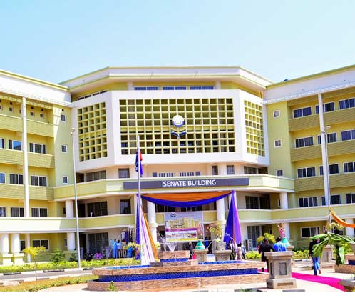
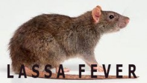

Home
Faculty
IVice Chancellor
Administration
Research
Centres
Institute
Campus Life
Services
About Us
AAUA 10TH & 11TH CONVOCATION LECTURE
Day Two Convocation Ceremony
Day Three Convocation Ceremony

|  |
AAUA HISTORYThe story of Adekunle Ajasin University, Akungba-Akoko (AAUA), Ondo State, Nigeria, is more appropriately told in two phases. It was first established as Obafemi Awolowo University in March 1982n by the government of the old Ondo State, headed by the late Chief Adekunle Ajasin. |
QUICK LINKS
|
HEALTH , HIGHLIGHTS, LEARNING, LECTURES, NEWS, PARTNERSHIP
|  |
| UPDATES | faculty of science international conference, 2022. |
UNIVERSITY COURSESUse ournew search to find undergradute and Postgraduate Courses.
|
CAMPUS NEWS & EVENTS
|
SEARCH OUR NEW COURSESOur courses are applied, innovative and grounded in the real world. |